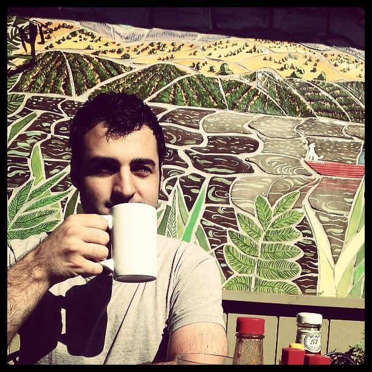

Stephen Bauer
Web Developer
About Me
Hello there!
My name is Stephen Bauer and I love to write code. Those moments when a piece of beautiful code just works perfectly for the first time, are the moments with which I want to saturate my programming career with.
Although I have always harbored a deep interest in programming, my path to being a developer only began in earnest in 2013, after finally trying some online tutorials in Ruby and JavaScript. the more I learned, the more I loved, the more I coded, the more I wanted to learn. It seemed only natural to apply and be accepted to a coding bootcamp in San Francisco: General Assembly's Web Development Immersive course!
My passion for technology and belief that software can legitimately help to foster an educated, intelligent and creative human spirit in today's culture, drives my quest to become as proficient and powerful a developer as I can attain to be. Though I start at humble beginnings, and a bit later than I would have liked, I am nonetheless looking ahead with the brightest of hopes for both myself and the people with which I'll have the pleasure of working with.
Now, after graudating from GA, I now possess a solid foundation with which to learn new languages, frameworks, concepts, tools, whatever knowledge is available to be gained from the vast repository of this industry.
I am now into my job junt for a Junior Developer position at a company that will allow me to become a member of the team, as well as to grow and develop my skills. I am always hungry to learn new technologies, something this industry is never short on, and to be able to do just that in the company of like-minded peers, while contributing to and creating great things is what excites me about my prospective career as a developer!
Projects

Gnosis
Description
An RSS feed aggregator and note-recording application I made as my first project for GA's WDI course.
Using feedly.com's API, users can access many feeds collected into a list of categories. Their available actions are viewing the articles at-a-glance, and logging a comment for any article. A user history page is maintained, for easy viewing of the user's entire comment history.
Intentions
For awhile now I thought it would be beneficial to have a portal from which to access a wealth of news/information sources to gain an at-a-glance overview of what is happening in the world every day, as opposed to maintaining a schedule of checking a collection of sites to browse their content for the day.A second feature I've been desiring is to easily learn something new each day or just keep a centralized log of my thoughts/progress that is connected to the source, in order to have a record of my information consumption. With Gnosis created, this is now possible!
Technologies
Made using Ruby on Rails, the Feedly API, and the Omniauth gem. Currently coded entirely in Ruby

Audiophile
Description
An audio sharing application that is the culmination of efforts by Kai Hofius, Sofya Nagaslaeva, Jay Schulhof and myself, as our group project for GA's WDI course.
With Audiophile, utilizing Amazon's S3 storage services, users are able to upload and share audio files of their choosing, browse others' accounts and add their files to their own, make as many snippets of as many files as they like.
Intentions
While discussing possible ideas for an app during our first meeting, our group touched upon the subject of audio files failing to go "viral" like their image and video counterparts do. Wouldn't it be great, then, if we implemented a site truly conducive to audio file management and sharing? A place where you can upload/record audio files of your own (or someone else's you really enjoy), take a snippet of that file if you like (for example, an excerpt from an hour-long podcast) and link that snippet to your friends without accompanying your link with instructions on what timeslot to buffer it?
Technologies
Made using Ruby/Ruby on Rails, JavaScript, Google Maps API, Sunspot, Devise, Amazon S3 and Paperclip.

Acquaintly
Description
A CRM constructed by Nina Pacifico and myself as our final project for General Assembly's Web Development Immersive course.
Users can currently sync their LinkedIn contacts to Acquaintly's database, and once they are categorized by the user, can be managed. A color scheme ranging from green to red lets the user know up-front how long it has been since that friend/acquaintance was last contacted.
Future deliverables will include incorporating Facebook, Twitter and Gmail into the mix.
Intentions
My partner and I discovered we share a common task with which we are uncommonly deficient: keeping up with our friends and contacts. Joining in her inspiration to construct an application that would help us, and others, keep track of our communications to our different friends and hold us to maintain some measure of social health, we set about building Acquaintly, an application well on its way to embodying the initial vision and idea.
Technologies
Made using AngularJS, Ruby/Ruby on Rails, LinkedIn API, Omniauth, and Devise.